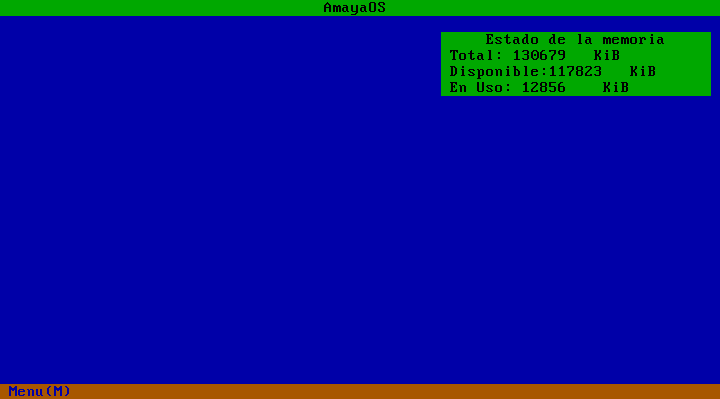
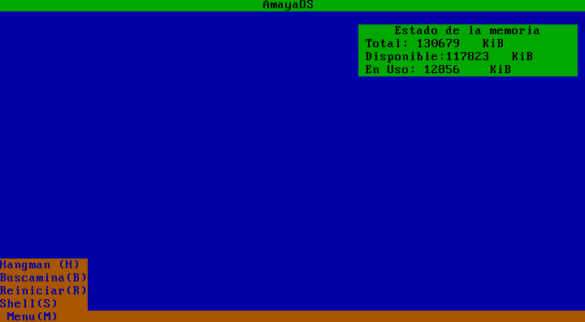
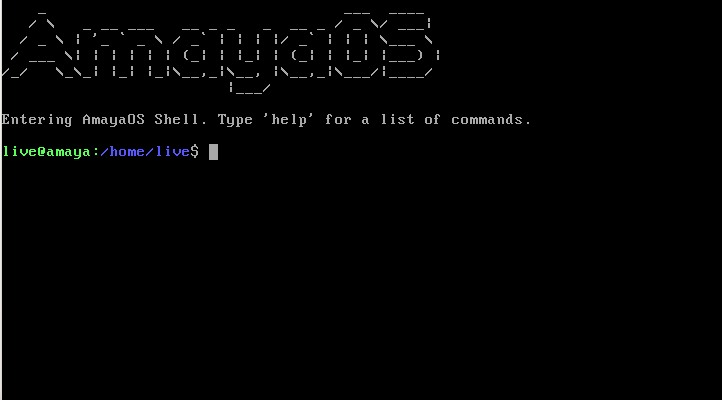
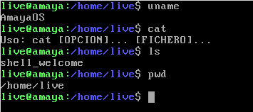
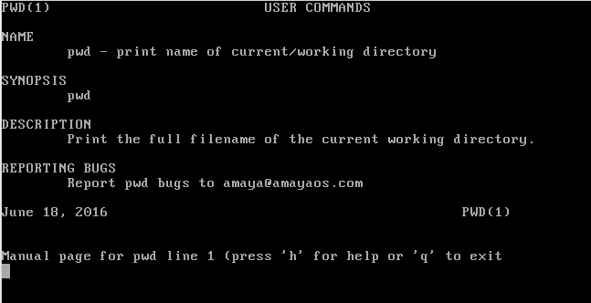
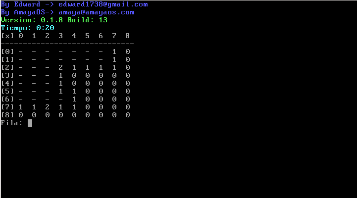

Capturas de Pantalla
Aquí están disponibles algunas capturas de pantalla de la versión actual de AmayaOS (0.09). No obstante para disfrutar del potencial completo del sistema operativo recomendamos obtener una copia del mismo.

Esta es la interfaz basada en texto (TUI) que se ejecuta por defecto en AmayaOS y que tiene una gran facilidad de uso.

A través del menú que nos ofrece la interfaz podemos acceder a las distintas aplicaciones que se ejecutan sobre ella.

AmayaOS, al igual que todos los sistemas operativos de tipo UNIX ofrece al usuario una línea de comandos o shell con la que interactuar con el sistema. En el caso de AmayaOS se trata de la interfaz principal del sistema.

Al igual que otros sistemas operativos, AmayaOS dispone de una serie de utilidades del núcleo (Coreutils) que permiten realizar tareas básicas.

AmayaOS dispone de su propia versión de man. En el caso de la imagen anterior se encuentra visualizando la página sobre pwd.

AmayaOS 0.09, ejecutando el conocido juego del buscaminas.